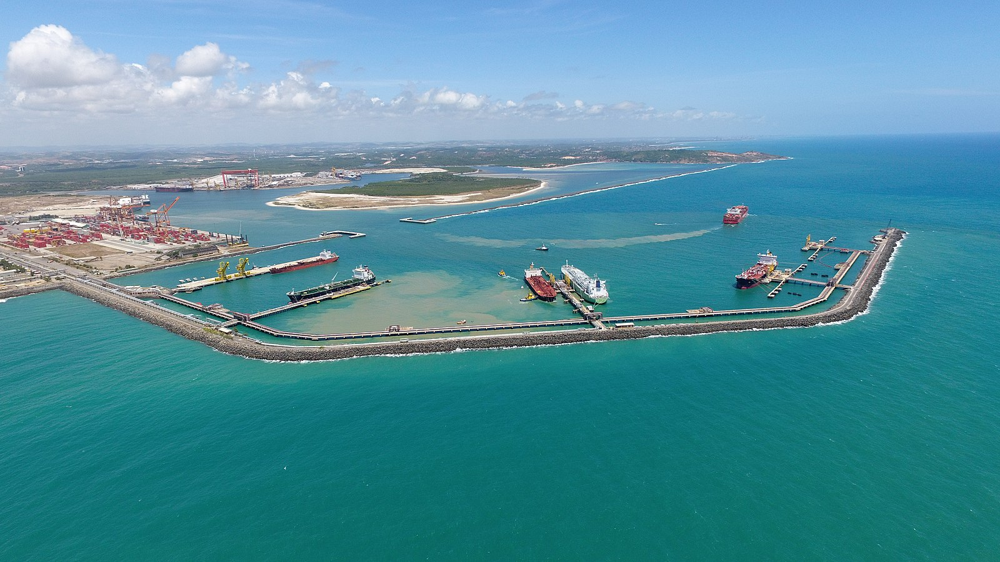

Porto de Galinhas is a beach in the municipality of Ipojuca, Pernambuco, Brazil. It is part of the municipality of Ipojuca, and located 60 kilometers (37 mi) south of the state capital, Recife. The municipality of Ipojuca, where Porto de Galinhas lies, was established on November 12, 1895.
Ipojuca
Ipojuca is a municipality in the state of Pernambuco, Brazil. It is one of the members of the Recife Metropolitan Region, located about 43 kilometers south of the capital of Pernambuco (Recife). It occupies a territorial area of about 514.8 km², with 0.368 km² of this total forming the municipal urban area, and the 514.5 km² constituting the rural area. According to the population estimate for 2013, released by the Brazilian Institute of Geography and Statistics (IBGE), its total population was 87,926 inhabitants, being the fifteenth-most populous municipality in Pernambuco.
Ipojuca has an average annual temperature of 24.5 °C, and its native vegetation consists of Atlantic forest and vast mangroves. Approximately 74.06% of the population of Ipojucana lives in the urban area, with 29 health facilities, according to IBGE data (2009).
The municipality was founded in 1846, but the occupation of the current territory is quite old, occurring after the donation of land plots by the Portuguese royal family in the 16th century. The development of sugarcane monoculture in the region was due to the fertility of the massape soil predominant in the municipality and the existence of two ports: Suape and Porto de Galinhas.
Ipojuca stands out for having the third largest Gross Domestic Product (GDP) in Pernambuco, mainly driven by tourism on its coast, with internationally known beaches such as Porto de Galinhas, Cupe, Muro Alto, Maracaípe, and Serrambi. It has the fourth-largest industrial GDP and the largest GDP per capita in the state. Ipojuca has one of the main ports in northeast Brazil, and one of the most technologically advanced in the country, comprising, in its territory, the largest shipyard in the southern hemisphere, the Atlântico Sul Shipyard. It is responsible for constructing oil tankers, gas tankers, container ships, drilling rigs, and offshore platforms. Ipojuca still houses, in its port complex, the Abreu e Lima Refinery, which processes heavy oil, transforming it mostly into diesel and petrochemical naphtha, both with low sulfur emission properties in the atmosphere. In addition to these products, the refinery also produces LPG (liquefied petroleum gas), fuel oil, and coke, delivering its products regionally and to other regions of the country through the Port of Suape, where the refinery's cargoes for export also leave. Currently, the refinery is notable for having the largest production of S10 diesel in the country. It is home to Petroquímica Suape, responsible for the main production of PET resins and purified terephthalic acid (PTA) in the country. In addition, it is the most important integrated pole for the production of polymers and polyester filaments in Latin America.
Recife

Recife is currently one of the most important information technology centers in the country. Porto Digital is a business environment in the ICT area created in 2000, in the historic center of the city. It houses more than two hundred companies, including multinationals such as Accenture, Oracle, ThoughtWorks, Ogilvy, IBM, and Microsoft. The Porto Digital is recognized by A. T. Kearny as the largest technology park in Brazil in terms of revenue and number of companies, contributing 3.5% of Pernambuco's GDP. The capital of Pernambuco also stands out in technological education. As an example, The Informatics Center of the Federal University of Pernambuco (CIn-UFPE), considered one of the main academic centers in informatics in Latin America and responsible for Computer Science, Information Systems, and Computer Engineering courses, is a major supplier of labor specialized in technology for multinationals in the sector. The University of Pernambuco and Catholic University of Pernambuco are renowned institutions in technological education.